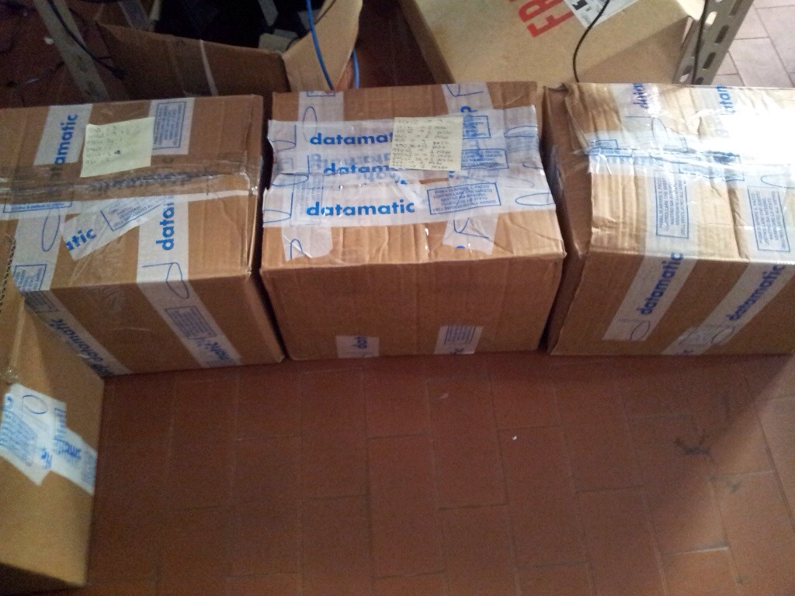

il lavoro che non mi e' piaciuto fare e' stato quello di controllare tutti
i tipi di guasti,contarli e metterli nelle apposite scatole.
Ogni settimana facevamo questo inventario per mettere in ordine
dentro il magazzino e per organizzarci meglio.
A fine riparazione dovevamo mettere in carica il tablet e quando era carico
bisognava testarlo. Avevamo una scheda con dei riquadri dove ci sono scritte le mansioni
da fare per testare il tablet e se funzionava quel tipo di mansione (tipo il wifi)
dovevamo mettere una crocetta e cosi' via per le altre mansioni
